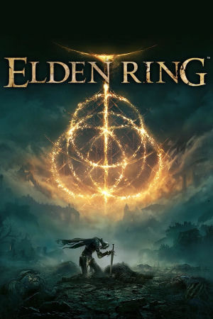

PlayStation 4, PlayStation 5, Xbox One, Xbox Series X/S, Windows
Originally released on February 25th, 2022 for PlayStation 4, PlayStation 5, Xbox One, Xbox Series X/S, and PC, Elden Ring is an open-world action role-playing game developed by FromSoftware and published by Bandai Namco Entertainment. It represents the studio's Soulsborne formula at its grandest scale: players create a custom character, the Tarnished, and explore the sprawling Lands Between in pursuit of the shattered shards of the Elden Ring. Combat builds on the deliberate, punishing melee and magic systems of Dark Souls, adding mounted battles, stealth, spirit summons, and craftable items. Crucially, the open world removes the corridor structure of earlier games -- catacombs, fortresses, legacy dungeons, and optional bosses are scattered everywhere, and the game rarely tells you where to go, trusting curiosity and danger to guide exploration.
The project's world and mythology were shaped in collaboration with novelist George R. R. Martin of A Song of Ice and Fire fame, who wrote the backstory of the Lands Between and its demigods, while Hidetaka Miyazaki directed the game itself. Anticipation was enormous, and the game delivered: Elden Ring sold more than 25 million copies, won numerous Game of the Year awards including the 2022 Game Awards' top honor, and became FromSoftware's biggest commercial success by far. A major expansion, Shadow of the Erdtree, arrived on June 21st, 2024, adding the Realm of Shadow, new weapons, and formidable bosses, and it too became one of the best-selling DLC releases ever. Elden Ring cemented the Souls formula's mainstream appeal and stands as one of the most acclaimed games of its generation.
FromSoftware
- Official developer website.
Elden Ring Fextralife Wiki
- A comprehensive fan wiki: builds, maps, item locations, and boss strategies.
Elden Ring Wiki (wiki.gg)
- Community-run wiki covering the base game and Shadow of the Erdtree.
Elden Ring Online Manual
- Online manual for the multiple versions of the game.
Elden Ring Seamless Co-op
- A popular overhaul of the game's multiplayer by LukeYui that lets you play through the entire game,
bosses included, co-operatively with friends without summon restrictions.
Elden Ring Item and Enemy Randomizer
- Shuffles item locations, shop inventories, and enemy placements for a fresh playthrough every time;
highly customizable options.
Convergence Mod Official Site
- A massive overhaul mod adding dozens of new weapons, hundreds of spells, revamped areas and bosses,
and new classes inspired by the DS3 overhaul of the same name.
Steam Grid DB - Contains lots of cool options for artwork that can be used in your Steam library.